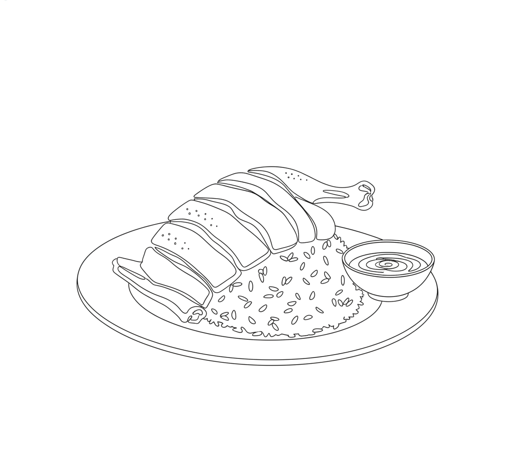

Johnny Lee's Hainan Chicken Rice (PRD)

Ingredients
- 1 whole white pullet chicken (the type of chicken matters)
- Warm water
- Ginger
- Scallions
- Ground turmeric
- Salt (2% of water weight)
Prep the chicken
- If using a Buddhist-style chicken (head and feet on), remove the feet and reserve for the stock. Remove the tail and any fat inside the cavity, and reserve.
- Exfoliate the chicken with 2–3 Tbsp salt, rubbing it into the skin and removing any debris. Let the chicken cure overnight.
- When handling the chicken, hook it under the armpit near the back spine and pull toward the neck, at roughly a 45° angle.
- You'll need at least a 10 qt pot per chicken.
Hainan master stock
- Build the stock to about 2% salinity — for example, a 4-liter stock needs 80g of salt dissolved into it.
- The stock should already contain the reserved chicken feet, carcasses, bones, and wings, ideally simmered 8–12 hours beforehand.
- On the day you poach, add ginger, scallion, and turmeric (for color) to the stock to aromatize it.
- Bring the master stock to a boil, then cut a small slit in the skin above the wishbone and below the neck so air can escape when you flush the bird.
Add the aromatics the same day you poach — it keeps the aroma fresher than reboiling them from a prior batch.
Flush the bird
- Once the stock is boiling, hook the bird and drop it in for 5 seconds, letting stock flush all the way through the interior cavity.
- Lift the bird out for 2 seconds to empty the cavity.
- Repeat two more times, then submerge the bird fully, back side down.
The point is raising the internal cavity temperature — pouring hot stock over the skin doesn't do this, and most people flush too quickly.
Poach the bird
- Once all chickens are in the liquid, bring back to a boil and hold for 2 minutes, skimming off any scum. (Boil longer if cooking a high ratio of chickens to stock.)
- Turn off the heat, partially cover with a lid, and set a timer for 20 minutes.
- Take the temperature of the breast and the stock, and note both.
- After the 20 minutes, take both temperatures again. Note how many degrees the chicken rose and the stock dropped — e.g. a chicken at 130°F and stock at 180°F will likely meet around 155°F.
- For a 4.5–5 lb chicken, plan for it to cook no faster than 35 minutes total (an additional 15 minutes on top of the 20 already elapsed).
- Target 66°C in the breast and 70°C in the thighs. Subtle tearing at the joints and back skin is a good sign it's done; tendons popping out of the drumsticks means it's slightly overcooked.
If the stock isn't heated enough before flushing, or there isn't enough liquid to hold thermal mass, the chicken can "stall" during the rest — the same idea as a barbecue brisket stall.
Ice bath
- Submerge in an ice bath, flushing the cavity with ice water a few times (the inside stays warmest longest).
- Let the ice melt naturally — about 20 minutes total.
Chilling too hard, too fast is why the skin-stock jelly doesn't set — let the chicken cool to just below room temp rather than ice cold, and load the stock with chicken feet to help the jelly form.
Carve and serve
Chop Hainan-style and serve with rice cooked in the master stock and a ginger-scallion sauce.
Chef Johnny Lee, formerly of Pearl River Deli (PRD), Los Angeles. Source: hwoolee.com